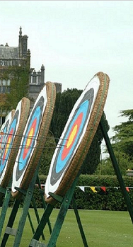
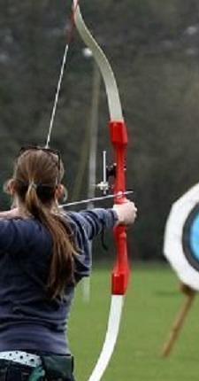

 |
_____________________HISTORIA_________________________
El tiro con arco es la actividad de tipo deportivo que consiste en lanzar flechas para
alcanzar una diana utilizando un arco. Existen diferentes tipos de arcos, siendo los
más habituales el arco largo, el corto, el recurvo y el de poleas.
También hay varios tipos de flechas. El arco se sujeta por la empuñadura con una mano
y con la otra se sujeta la flecha con tres dedos de la otra sobre una parte de la cuerda
del arco, apoyándose la parte delantera de la flecha sobre una zona especial del arco.
Una vez cargada la flecha se apunta a la diana, se tensa la cuerda y se dispara la flecha.
El tiro con arco, es decir, el uso de un arco de cuerdas para impulsar flechas hacia
un objetivo,se cree que se remonta a miles de años, posiblemente incluso hasta la edad
de piedra de 20000 a.C, con arcos y flechas usados por una gran cantidad de pueblos
a lo largo de los milenios como un medio de caza y guerra. Desde los antiguos egipcios
hasta la dinastía Shang en China (1766-1027 aC), las hordas de Atila, el huno de las
grandes civilizaciones de los asirios, los persas y los patios, el tiro con arco fue
ampliamente utilizado en cada una de ellas, y hasta el día de hoy, es una práctica
ampliamente practicada alrededor de todo el mundo.
En esta página web, aprenderás distintas cosas acerca del tiro con arco, como su historia,
el objetivo del juego, sus reglas, su puntuación y otra información relevante.
|
 |
__________________REGLAS DEL JUEGO_______________________
- Los arqueros deben cumplir con todas las reglas oficiales en cuanto a los equipos
que utilizan en la realización de su deporte, con principal énfasis en que no se use ningún
equipo o accesorio que pueda dar una ventaja injusta sobre un oponente.
- El tiempo máximo permitido para disparar un final de tres flechas es de dos minutos,
cuatro minutos para un final de seis flechas.
- Los atletas no pueden levantar el brazo del arco hasta que se dé la señal para comenzar
a disparar y se puedan imponer penalizaciones (en forma de puntos perdidos) si el arquero
dispara después de que se haya cerrado la práctica oficial.
- Una flecha no se puede volver a disparar bajo ninguna circunstancia. Se puede considerar
que la flecha no se disparó si cae desde el arco o falla, o si la flecha se parte o cae.
Se daría tiempo extra en tales circunstancias.
- Una flecha que rebote o se cuelgue del objetivo anotará de acuerdo con la marca que haga
en la cara del objetivo. Las flechas que se pegan, al estilo de Robin Hood, en el nock
de otro marcarán lo mismo que la flecha en la que están incrustadas.
|